Reading and writing
Everything here happens at http://localhost:4100, after you sign in. It is meant to feel like an editorial tool, not a git client. The owner and anyone granted read+write write straight to git; a contributor's Update reads Propose and lands in review (see Permissions).
Settings
Settings is the owner's, under the workspace menu in a browser (in the app, under the title bar's gear), and it is the workspace's page rather than Document's: it keeps the /kb/settings address, which the app's gear and the links in Plan and Think reach, and draws without Document's sidebar, search, tree or conductor, under one row with a Back control that returns to the page you came from; the Activity journal (/kb/activity) is drawn the same way, with a product filter in its address when a product's link opened it. General holds the workspace's name, logo (drawn by the app's title bar seal and the tab's icon; no product draws a mark inside its own chrome), working mode, and the owner's name while the workspace has no people; Tools, People and Mount access are described in their own guides. Appearance holds the conductor’s shape and motion choices (see The conductor) and one color, the accent, near black unless you pick another. Document draws it as the current page's row, the text selection, the primary button, the focus ring and the text of its links, which inside a page are always underlined. Plan draws the same color on its own paper and updates open pages when the accent changes, including when you return from Settings. Think reads it the next time it loads. The page shows a pick at once, Save keeps it, and Reset returns to the default. When a color is too light or too dark to read where it is drawn (on the paper, the sheet, the recessed fields or the accent's light tints behind the current item, search hits and chips), Hanji corrects the role that failed, whether the fill, the link text, the button labels or the focus ring, and a line under the picker names it, for light and for dark. Light and dark follow your system. The three products and desktop shell share one slightly cool neutral palette, so the accent is the one color that changes between workspaces. What is Document's own sits under the Document tab: Reading (the font of the pages you read and write, the content width and the text size; titles and the rest of Document keep Newsreader), the sidebar's folding, and search (the alias page and the query log).
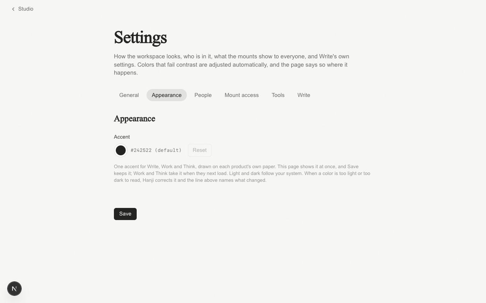
Reading
Pages open on cool neutral paper, set in a serif for long reading. Document, Plan and Think share sidebar typography and spacing: compact section labels, 12px navigation rows, and search fields capped at 264px while the rail widens. Their Search… placeholder, glyph, border, colors and shortcut badge come from the same shared control styles. Edit and Save shortcuts inherit the button’s theme color. The sidebar on the left is your mounts and their folders, nested and collapsible, and it expands to show where you are. Mounts have full-height 33px rows and full-row hover targets. Collapsed mounts sit close together; expanded trees keep extra space after their children. Mount and folder carets use the same size and shape; mount children start one level below their mount. Folder arrows and document rows reserve the same disclosure column: sibling labels align, each child level moves 16px to the right, and quiet branch guides connect nested content to its parent. The selected document keeps that indentation. A breadcrumb across the top tells you the path, collapsing its middle on deep pages so it never runs off the screen. Wikilinks, written [[by title]], resolve to the page they name, and only to pages you are allowed to open.
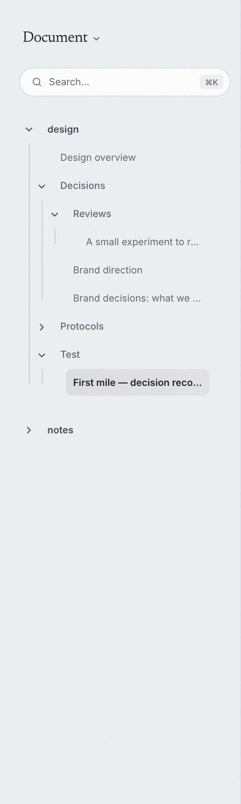
Selecting a run of prose raises a small bar over it, and the text stays selected while the bar is up. Copy puts the selection on your clipboard twice over - as rich text for anywhere that takes it, and as real Markdown for anywhere that does not - so a paragraph pasted into another editor arrives with its headings, lists, tables, and code fences intact, and pasted into a plain text field arrives as the Markdown that made it. ⌘C works exactly as it always did; the button is just the one that also carries the Markdown. Comment is another thing a selection can mean, and so is Issue when you can file work into the workspace's tracker; each is a deliberate press. See Comments.
Search
⌘K opens the palette. Before you type it offers the pages you changed most recently. The full search runs from the first character you type; from the second, matching titles answer ahead of it, because a title is the fast answer and a one-character prefix is the most expensive question the index can be asked. The two lists are one list: titles at the top, no page listed twice, each row carrying the page's title, the heading the match sits under, and the passage itself. Arrow keys move, Enter opens the row you are on, and ⌘Enter takes the whole query to the results page.
The title tier is deliberately workspace-wide. It is the fast answer to "what is that page called", so it looks across every pages mount you can read, and it ignores the mount or path filter the rest of the search obeys.
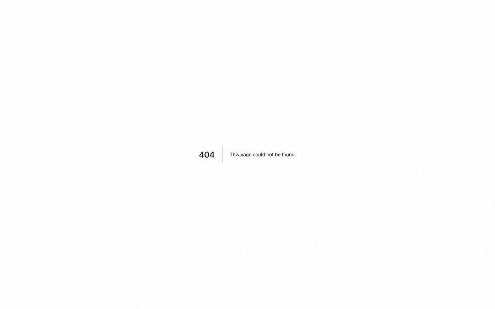
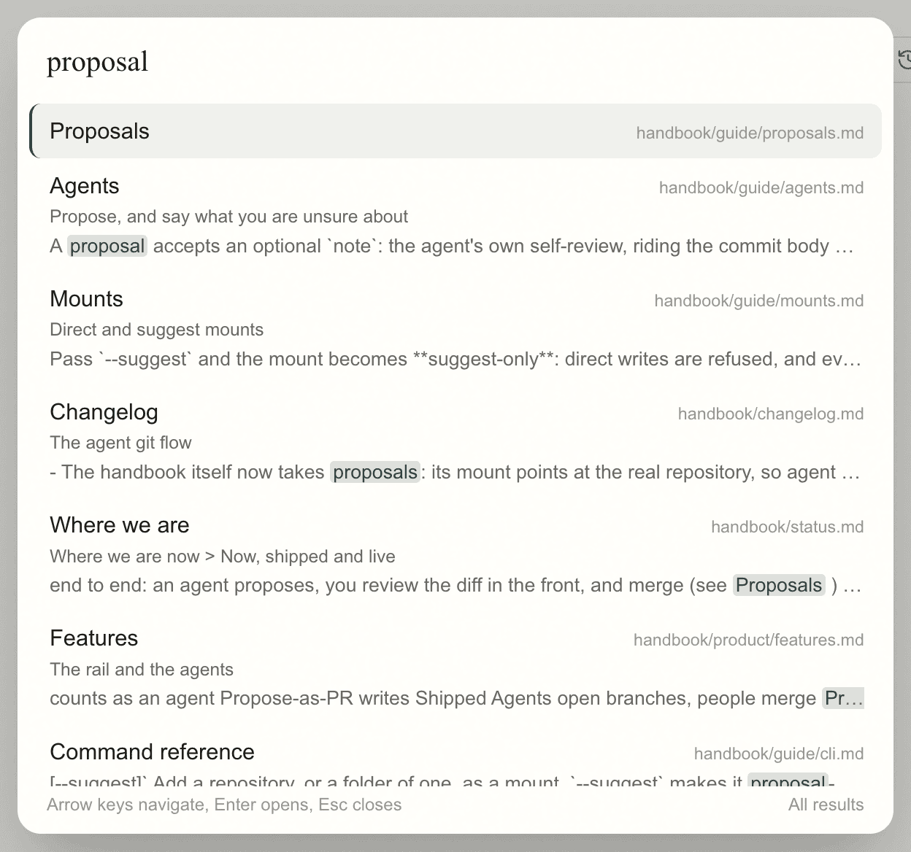
/kb/search is where you dig. It answers with exact counts rather than fast ones, twenty results to a page, grouped per page, with up to two passages under each and a third named on one line. The headline counts the pages that hold any of your words; a mount chip counts the pages in that mount that hold every one of them, and when those two numbers differ the page says so beneath the chips rather than leaving you to wonder. Words that matched nothing you can read are named under the count, along with the pages whose titles come closest, from anywhere you can read rather than from the mount a chip has narrowed you to, and the line says so. Paging stops at the 500th match, which is as deep as the pool goes, and says so instead of offering a page that would come back empty. A link into a page that is no longer there - a stale ?o=, a bookmark into a result set that has since shrunk - says "No results on this page." rather than claiming nothing matched, and keeps its Previous link back to the results that exist. Narrow rather than page: a mount chip, or a filter inside the query.
A query can carry filters: mount:handbook, path:notes/2026 (in: is the same thing), title:release, -draft to push a word away, and a phrase in quotes for words that must sit together. A mount: inside the query narrows the search itself, while the chip row follows the mount filter in the URL, so the two can say different things and each still describes what it did.
Opening a result lands you on the match. The page scrolls to the block that matched, that block wears a brief wash which fades on your first scroll, and the words that matched stay marked while you read. Where an alias class ties two spellings together, an English query marks the Korean word it actually found, and the other way round. Press Edit and both marks step aside; Escape back to reading brings the landing back.
Aliases, so one word finds the other
A team writes 오퍼월 in one page and offerwall in the next, and search should not care which one you typed. Point Settings at one page in the library, named by its mount and then its page path (notes/search-aliases.md), and that page configures it:
오퍼월 = offerwall, offer wall
정산 = settlement, payout
The mount goes by its name, which is not always the spelling in the address bar: a mount named notes that reads /kb/p/team-notes/… is notes here. Settings takes either spelling and saves the name, because that is the one search looks up. Any term in a class finds the pages that use the others. A table row with one term per cell is the same thing as a = line, so a class can live in a table with a heading row above it. Lines that share a term merge, so a = b and b = c become one class of three. A class holds up to 8 terms and a page up to 500 classes; entries past either cap are dropped, and Settings says how many went and names the first. A line that is not a class is skipped, and emptying the field turns aliases off. The list is a page like any other, which means the vocabulary of your search has history, review, and an author.
The log of what people searched for
Hanji keeps the searches this workspace ran: the query as it was typed, the words it resolved to, how many results came back, how long it took, and which result was opened. No name is stored with a row, and nothing leaves the machine. The log lives beside your settings rather than in the index, so an entry outlives the page it names, and it keeps the last 10,000 searches; on a shared workspace, everyone's queries land in that one log. The switch in Settings turns it off, clicks included.
When search says it is indexing
The index is a cache, and a change to its format empties it until it has been re-derived from the pages themselves. While that is true, the palette and the results page say the index is being built rather than dressing an empty answer as an answer. Settings has Rebuild the index for exactly that, owner only: it re-derives everything from stored page content, reports progress the way a first sync does, and takes minutes on a large library. One rebuild runs at a time, and the line above the button says where the index stands: that it is being checked, that it is in step with your pages, that it needs rebuilding and how many problems the check found, or that the check could not be run at all and why. The problems themselves are raw counts of rows against rows, so they sit behind What the check found rather than in the sentence.
Writing
Editing is deliberate, and it is one gesture.
- Press Edit, or
⌘E. The page becomes editable in place, on the same measure you were reading, at the same scroll position - the header bar keeps its breadcrumb and simply swaps its buttons for Discard and Update. - Change what you came to change. It is a real editor: Markdown shortcuts, a slash menu to insert, tables with handles, task lists, images, embeds, and emoji (the toolbar's picker, or type
:and a few letters). - Press Update. Hanji writes a single commit behind the scenes, with a clean message, and drops you back into reading.
The header bar stays with you: back and forward, the breadcrumb, and the page's actions stick to the top of the view, so a long page never scrolls away from its own controls. A hairline appears under it once the prose is running beneath, and is gone again at the top of the page.
Line breaks, and tables
⇧Enter puts a line break inside the block you are in rather than starting a new one. Inside a table cell, plain Enter means the same thing, because a cell is one line and has nothing to split. A break is written to the file as <br> - the only spelling a table row can carry, and the one Hanji uses everywhere so that a break survives being moved from a paragraph into a cell and back.
That is also as far as a list in a cell goes: broken lines, each with its own dash. Markdown tables hold inline content only, so a real bullet list cannot live in a cell in any tool that writes Markdown - what you get is the lines, correctly broken, and the dashes you typed are left exactly as you typed them.
Highlights
Highlight a phrase the way you would bold one: select it and press ⌘⇧H, pick a swatch from the selection bubble or the bottom toolbar, or simply type ==like this==. There are four colours - a default yellow, then blue, green, and pink - and pressing the swatch a highlight already wears takes it off again.
What lands in the file is worth knowing, because it is your file. The default colour writes ==the phrase==, the portable spelling every other Markdown tool understands. A chosen colour has to write <mark class="hl-blue">the phrase</mark>, because standard Markdown has no way to name a colour. So the common case stays clean Markdown, and colour costs you portability only when you ask for one. Both read back as the same highlight, in the page and in the editor alike.
If you changed nothing, nothing is committed. There is no draft state to babysit, and no save button that lies. And because edits are byte-fidelity, the commit for a one-word fix is a one-line diff. See Byte-fidelity.
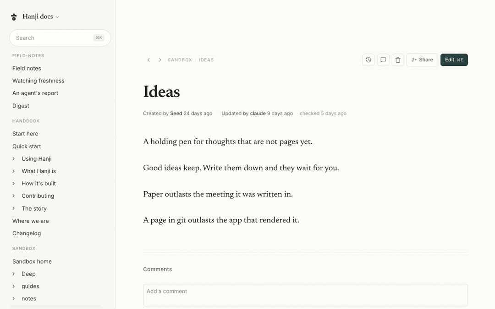
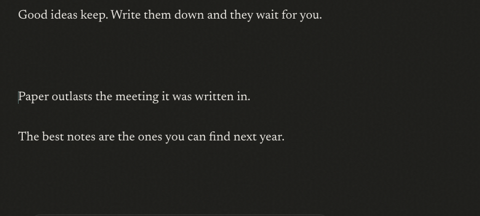
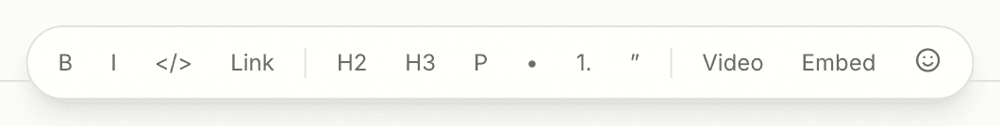
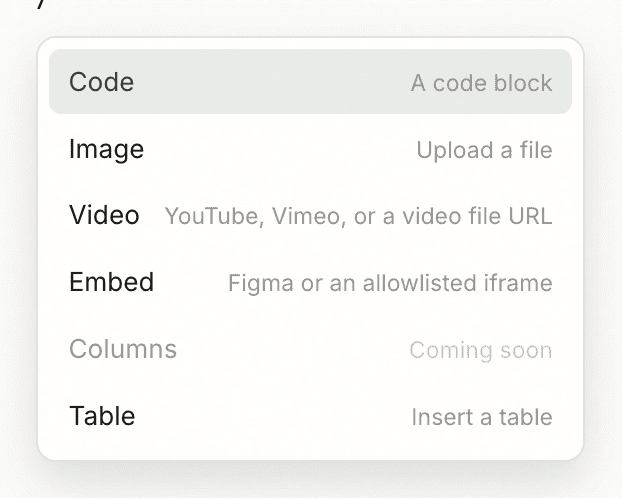
The slash menu offers Heading 1, Heading 2, Heading 3, Bulleted list, Numbered list and Quote, the same blocks as the toolbar, then Code, Image, Video, Embed and Table. Type a few letters of any word to narrow it: /list finds both lists. When nothing matches, the menu stays open on No matches. While you select text, the selection bubble carries the formatting and the bottom toolbar is hidden, and the line you are typing stays above the toolbar as the page scrolls.
Fresh by the time you look
A page you are reading keeps itself current. While its tab is visible it checks itself every seven seconds, and when anyone changed it meanwhile - another editor pressing Update in the app, or an agent editing the underlying files - the page refreshes in place, quietly; switching back to the tab is enough to catch up. A one-line note says it happened, naming the page that moved, with a link straight to it when the change was somewhere else, or pointing at the Activity page when several moved at once. That includes the pictures: replacing an image counts as a change even though no prose moved, and the new picture arrives rather than the one your browser had already cached; no note for that, since there is no page to name and nothing for one to point at. When someone else has the page open in their editor, "Remy is editing" sits beside the byline, so you know a change is coming before it lands. The byline carries the trust surface: "checked just now" or "checked 4m ago" - when the index last agreed with the files, a different claim than the page's own "updated", which is about content - ticking as you read, with a quiet retry when a sync fails. Silence means nothing changed; nothing here ever interrupts.
When two edits collide
Hanji notices if the page changed underneath you, and it never makes you throw your edits away to deal with it. While your editor is open, the page checks itself every seven seconds, and a change raises only a quiet line, not an alarm: "Remy changed this page. It will merge when you save." If the two edits fold together cleanly and you have not touched the keyboard for a few seconds, they stop waiting: their change is merged into what you are writing right then, your cursor goes back where it was, and a line tells you whose edit arrived. Touch the keyboard while that is being worked out and it is abandoned, to be tried again the next time you pause. The line names the other hand where the name is honest (the last committer, on a git-backed mount) and says "This page changed" on a plain folder. If someone else is editing at the same moment, a second line says so: "Remy is also editing this page. Edits merge when you save." There is no lock and no take-over; the merge waits until you save. As you type, your draft is kept in the browser too, so a reload or a closed tab loses nothing.
When you press Update and the page has moved, Hanji tries to fold the two edits together. Most of the time they touch different parts (someone fixed a link at the foot of the page while you rewrote the top), and the fold is clean: your work and theirs both land in one commit, and a line tells you it happened. A contributor gets the same fold: the proposal that lands in review already carries both edits. Only when the two genuinely changed the same lines does Hanji stop, and even then it never dead-ends. It shows you what the other side changed and offers doors, none of which discard your work or theirs: Keep my version keeps your wording where you both changed the same lines and folds in the rest of their edit; Take theirs loads their page and keeps your draft recoverable; Propose sends that same merge to review and leaves the page on theirs. A contributor, or anyone on a suggest mount, sees two doors, because for them Keep mine is the propose door: Propose my version and Take theirs. The save itself still re-checks the file on disk at the last moment, so nothing is ever overwritten unseen, and this holds on plain folders too, where no git history could bring an overwritten change back.
New pages
Making a page is the same gesture pointed at a path that does not exist yet. The fastest way is the + that appears at the end of every sidebar row: on a mount it creates at the root, on a folder it creates inside it, and on a page it nests, converting that page into its section's landing with the new page beneath. The title starts empty under an Untitled placeholder, and the path below it follows what you type; a page saved with no title is named Untitled. Enter in the title moves on to the body, which says Start writing until you do. Document, and press Create. That first press is the commit that creates the file; on a mount where you propose, it reads Propose.
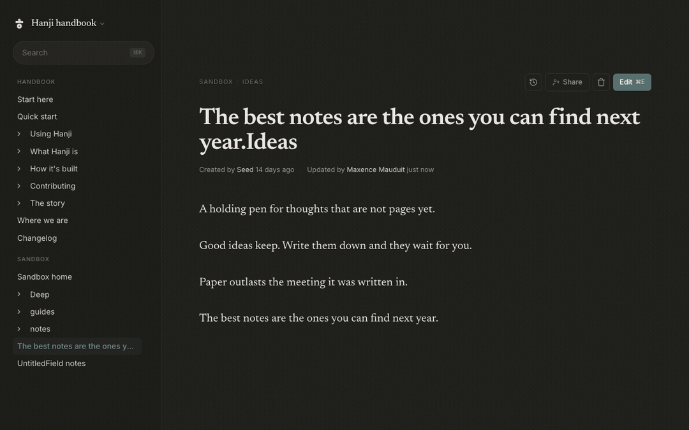
Organizing the sheet
The sidebar is not just a map. It is where you arrange the collection.
- Move: drag a page or folder onto another folder, or onto a mount's header for its root. A folder brings everything inside it, and the commit behind the drop is a real
git mv, so history follows the page. - Reorder: drop on the edge of a sibling row, where the insertion line shows. Hanji writes the new arrangement into the pages'
order:frontmatter, as one commit. This is the manual order, and it is the default the sidebar shows. - Nest: drop onto the middle of a page and it becomes a section landing with the dragged page inside, the same conversion the + performs.
- The rail too: drag one mount header onto another to reorder the mounts themselves.
Drops apply instantly; git catches up behind. If something blocks a move, the tree snaps back and a toast tells you why. And if you were reading the page you just moved, the address quietly follows it.
Sorting a section
The curated order: is not the only way to read a folder. Open a folder (or a mount) and a small sort control appears on its row: leave it Manual to keep your arrangement, or switch that section to Newest first, Oldest first, or A–Z by title. The date it sorts by is the one in the filename when a page has one (a 2026-04-24-… note sorts by that), and the page's last-commit date otherwise - so a bulk rename that resets git's dates does not scramble the order. The choice is per folder and per person, kept in your browser, so it never changes what anyone else sees or writes anything to the repository. A re-sorted section keeps its control lit so you can tell at a glance. While a section is sorted, drag-to-reorder pauses there: the order you see is not the stored one, so switch back to Manual to curate again.
History, Annotations, Delete and Share sit together in one quiet action group. Edit stays separate as the primary action; all controls align in height and the shortcut follows the theme.
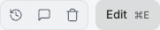
Deleting
Next to Edit sits a quiet trash. The first click arms it into an explicit red question, the second deletes: a git rm and one commit. Deleting a section landing takes its children with it, the inverse of nesting. Nothing is ever truly gone, though. The repository remembers every sheet, and history can bring one back.
Activity
In the desktop app, Activity opens in its own workspace view without navigating through Document. It starts with all products; Back returns to the product and page you were using.
Activity starts with a workspace overview: contributions in the last seven days compared with the previous seven, active days, the most active day, product mix and the balance of human, agent and outside contributions. Product bars open that product’s filter. These are recorded contributions, including each credited hand; they do not estimate time saved or productivity. Capped history is labeled as partial.
The first open shows the page shell before it reads history. Data then loads through the authenticated, private /api/activity route. A failed or slow request offers Retry and leaves the rest of the app usable. Returning to the page keeps its existing view; Refresh insights asks for current data. Filter links keep their bookmarkable addresses, update in the same document and support browser Back.
Activity is also the workspace's journal: what moved in Document, Plan and Think, and what agents did, by day. Each row reads in one order: the time (or a span, when a run of edits folds into one row), the product in small quiet capitals, who, what, where, and a detail when one matters (where a page moved from, how an issue closed). A page edited thirty times in an hour is one row; a board changed by two people in turn is one row naming both; an agent's session on an issue is one row that names the issue, then the pages and issues it changed, then how long it ran, as in "scribe for ada worked on HNJ-12 Pick the launch date guide/plan · 40 min", and it reads "is working on" while it runs. Every row links into its product: a page, an issue, a board, a session.
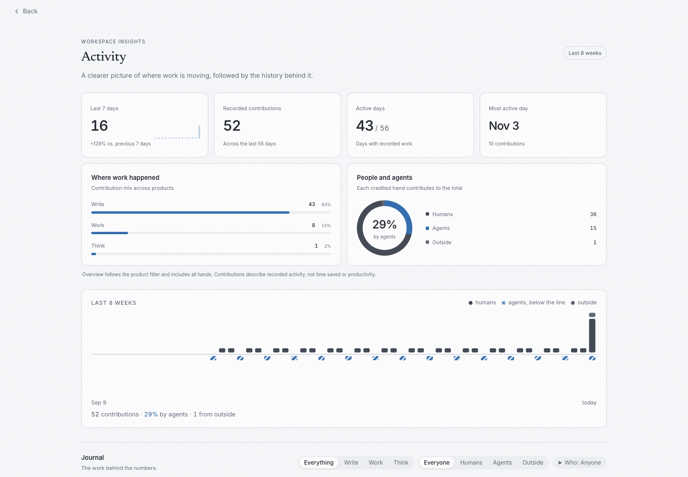
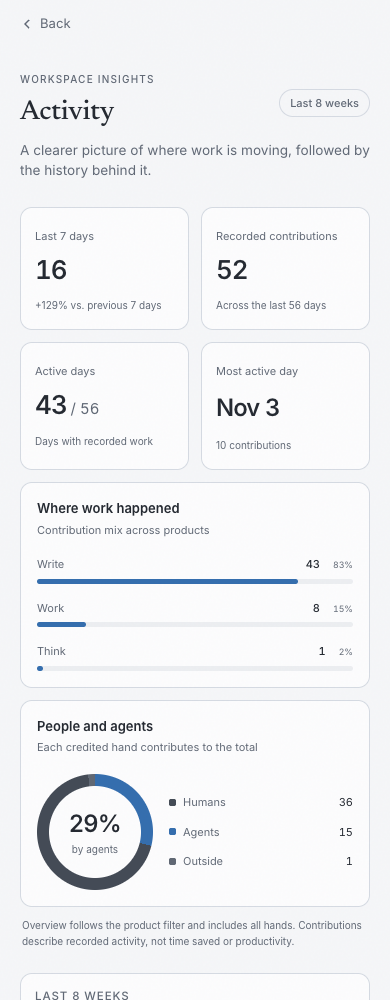
The strip above counts eight weeks of acts by day, humans above the line and agents below it, with each day's split by product in its title. Three filters sit under it, each a link you can bookmark: a product (Document, Plan, Think), a kind of hand (humans, agents, outside), and Who, a menu of everyone who moved something in the window. The strip follows the product filter and ignores the others, so the balance of hands stays in view; a caption under it says what it counts. Older takes you back a page at a time, as far as the history goes.
You see only what you may read: a page, an issue or a board outside your grants makes no row, no count in the strip and no name in the menu, and a product you read no mount of has no pill. A commit that also touched something you may not see keeps its verb and loses its message. The "seen up to here" line is a position, moved when you leave the unfiltered journal; nothing is marked read by being seen.
History
Every page carries its past. Open its history to see who changed it and when, as a list of revisions with a byline, and open any revision to read the page as it was then. Because the store is git, this is not a feature bolted on top. It is the commits, shown well.
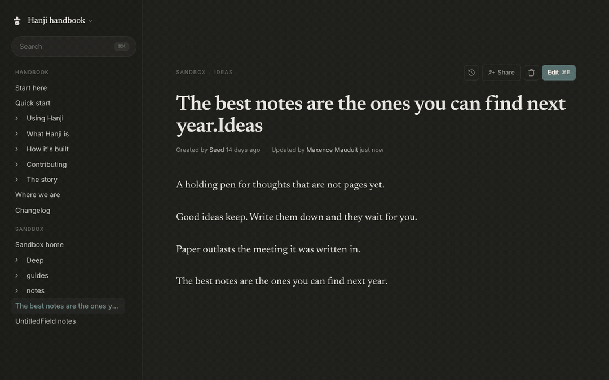
Read Agents next, to let a coding agent read and propose against these same pages.